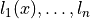
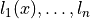
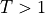

Tutorial 2.b: Learning Calibrated Probabilities: The Basics
Calibration is a basic requirement for probabilistic predictions. However, many classification models are not intrinsically well-calibrated. Thus, there exist several methods that apply a post-processing adjustment to the classifier to improve the model’s calibration. In this tutorial we will cover some basic recalibration techniques.
# We must first import the dependencies, and make sure that the torchuq package is in PYTHONPATH
# If you are running this notebook in the original directory as in the repo, then the following statement should work
import sys
sys.path.append('../..') # Include the directory that contains the torchuq package
import torch
from matplotlib import pyplot as plt
reader = torch.load('pretrained/resnet18-cifar10.pt')
predictions = reader['categorical']
labels = reader['labels']
Most calibration algorithms are in the torchuq.transform.calibrate
module, with the exception of decision calibration, which is in the
torchuq.transform.decision module.
from torchuq.evaluate import categorical
from torchuq.transform.calibrate import *
Torchuq implements many recalibration algorithms. Below is a list of currently supported algorithms:
Standard calibration methods: temperature scaling, histogram binning
Classwise calibration methods: dirichlet recalibration
Advanced calibration methods: Decision calibration
Standard Calibration Methods
Temperature Scaling
Temperature scaling is a recalibration method for neural networks that learns a single temperature parameter and rescales the confidence scores for all samples simultaneously.
For each input  , a neural network typically first computes a
logit score  for each of the
, a neural network typically first computes a
logit score  for each of the  possible classes. It then applies a softmax function to compute the
confidence score:
possible classes. It then applies a softmax function to compute the
confidence score:
Temperature scaling simply adds a temperature parameter  to the
softmax function:
to the
softmax function:

A higher temperature () will reduce the confidence, and a
lower temperature () will increase the confidence.
is trained to minimize the standard cross entropy loss on a validation
dataset. Note that the accuracy of the classifier will not change —
the relative ordering of the possible classes will remain the
same, so the predicted class will remain the same. Only the confidence
of the predicted class will change.
Despite its simplicity, temperature scaling performs well empirically in classification calibration for deep neural networks [1].
In torchuq, all calibrator classes work in essentially the same way, so
this may sound familiar if you have seen the tutorial for regression. In
particular, to use TemperatureScaling there are only three functions
that you need to know:
Constructor:
calibrator = TemperatureScaling.Train:
TemperatureScaling.train(val_preds, val_labels)trains the predictor based on validation predictions and validation labelsTest:
test_intervals = TemperatureScaling(test_preds)outputs the recalibrated predictions
categorical.plot_reliability_diagram(predictions, labels);

calibrator = TemperatureScaling(verbose=True)
calibrator.train(predictions, labels)
predictions_ts = calibrator(predictions)
_change_device is deprecated
Iteration 0, lr=0.00100, NLL=0.178
Iteration 100, lr=0.00100, NLL=0.170
Iteration 200, lr=0.00100, NLL=0.165
Iteration 300, lr=0.00100, NLL=0.163
Iteration 400, lr=0.00100, NLL=0.162
Iteration 500, lr=0.00100, NLL=0.162
Iteration 600, lr=0.00100, NLL=0.162
Iteration 700, lr=0.00050, NLL=0.162
_change_device is deprecated
categorical.plot_reliability_diagram(predictions_ts, labels);
Histogram Binning
Histogram binning is another popular recalibration method for classification models. Histogram binning partitions the confidence scores into bins , and sorts each validation sample into a bin based on its predicted confidence. It then resets the confidence score for each element in a bin to match the average classification accuracy of elements in that bin.
With torchuq, it is extremely easy to use a different recalibration method — simply replace the TemperatureScaling class with the HistogramBinning class. In this case, histogram binning appears to achieve better calibration than temeprature scaling, as shown in the visualized reliability diagram.
calibrator = HistogramBinning(verbose=True)
calibrator.train(predictions, labels)
predictions_hb = calibrator(predictions)
categorical.plot_reliability_diagram(predictions_hb, labels);
Top-1 accuracy of predictor is 0.952
Number of histogram binning bins is 20
tensor([-1.0000, 0.8616, 0.9733, 0.9918, 0.9962, 0.9977, 0.9983, 0.9986,
0.9988, 0.9990, 0.9991, 0.9992, 0.9992, 0.9993, 0.9994, 0.9994,
0.9995, 0.9996, 0.9996, 0.9997, 2.0000])
Classwise Calibration Methods
Sometimes, overall confidence calibration is insufficient. In many applications, we may instead want to achieve the stronger notion of classwise calibration. Classwise calibration groups samples by their true class label, and considers the ECE within each class; this may be useful (for instance) for ensuring that different groups are similarly well calibrated.
Dirichlet Calibration
One method for achieving classwise calibration is Dirichlet calibration [2]. This method learns a calibration map that transforms the predicted probabilities based on a Dirichlet probability distribution. In neural networks, it can be implemented as additional layers: a logarithmic transformation followed by a fully connected layer with softmax activation.
calibrator = DirichletCalibrator(verbose=True)
calibrator.train(predictions, labels)
predictions_dc = calibrator(predictions)
categorical.plot_reliability_diagram(predictions_dc, labels);
_change_device is deprecated
Finished training 0 epochs, lr=0.00100, nll = 4.563, reg = 3.135
Finished training 10 epochs, lr=0.00100, nll = 0.457, reg = 2.039
Finished training 20 epochs, lr=0.00100, nll = 0.231, reg = 1.139
Finished training 30 epochs, lr=0.00100, nll = 0.187, reg = 0.574
Finished training 40 epochs, lr=0.00100, nll = 0.170, reg = 0.287
Finished training 50 epochs, lr=0.00100, nll = 0.162, reg = 0.145
Finished training 60 epochs, lr=0.00100, nll = 0.158, reg = 0.083
Finished training 70 epochs, lr=0.00100, nll = 0.155, reg = 0.051
Finished training 80 epochs, lr=0.00100, nll = 0.154, reg = 0.043
Finished training 90 epochs, lr=0.00100, nll = 0.152, reg = 0.039
Finished training 100 epochs, lr=0.00100, nll = 0.151, reg = 0.039
Finished training 110 epochs, lr=0.00050, nll = 0.150, reg = 0.042
Finished training 120 epochs, lr=0.00013, nll = 0.150, reg = 0.043
Finished training 130 epochs, lr=0.00006, nll = 0.150, reg = 0.042
Finished training 140 epochs, lr=0.00003, nll = 0.150, reg = 0.042
_change_device is deprecated
Advanced Calibration Methods
Decision Calibration
[TBD]
References
[1] Chuan Guo, Geoff Pleiss, Yu Sun, and Kilian Weinberger. “On Calibration of Modern Neural Networks.” International Conference on Machine Learning (2017).
[2] Meelis Kull, Miquel Perello-Nieto, Markus Kängsepp, Telmo Silva Filho, Hao Song, and Peter Flach. “Beyond temperature scaling: Obtaining well-calibrated multiclass probabilities with Dirichlet calibration.” NeurIPS (2019).